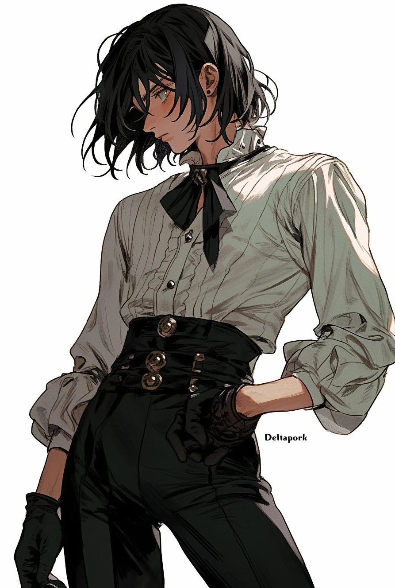

Identidad & Apariencia

| Nombre | Vlimir Tyrell |
| Padres | Mace Tyrell y Alerie Hightower |
| Hermanos | Willas y Garlan (mayores), Margaery (gemela) y Loras (menor) |
| Edad | 20 años (nació en 278 DC) |
| Cabello | Negro, desordenado, un mechón sobre el ojo (no el castaño Tyrell) |
| Ojos | Gris claro, mirada de lado |
| Complexión | Delgado, brazos fibrosos de arquero |
| Ropa | Cosida por él: camisa de chorrera, lazo negro con broche, pantalón negro de talle alto con botones de bronce, guantes negros |
Habilidades
| Área | Nivel |
|---|---|
| Arco | Excelente: el mejor arquero de la familia |
| Costura | Muy alto: castigo de Olenna convertido en orgullo |
| Exploración | Alto: bosques, ríos y caminos del Dominio |
| Equitación | Buena |
| Espada | Baja, por elección: «solo un idiota se planta delante de otro para que se apuñalen» |
Carácter
- Rebelde y explorador; le aburren los banquetes.
- Orgulloso hasta la terquedad: si le dicen que no puede, lo hace mejor que nadie.
- Quiere ser algo más que un noble.
- El simulador no decide nada de esto en escena: lo decide el jugador.
Familia
- Margaery: se llevan bien; se entienden sin hablar.
- Willas y Garlan: buena relación con los hermanos mayores.
- Loras: buena relación con el hermano menor.
- Mace: no se llevan bien.
- Olenna: bien, aunque no le hace mucho caso. Es el único que se queja con ella de todo, y ella con él.
- Alerie: la única a la que escucha.